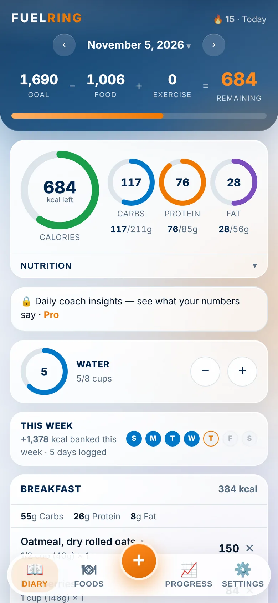
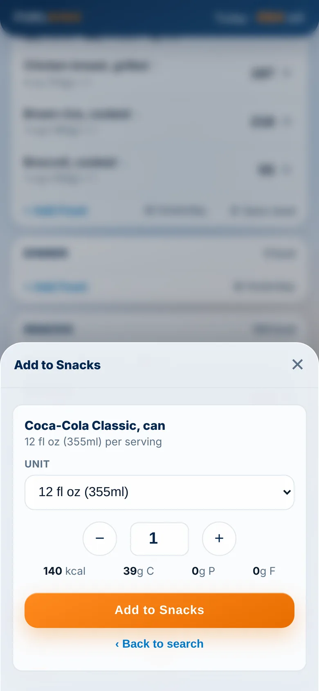
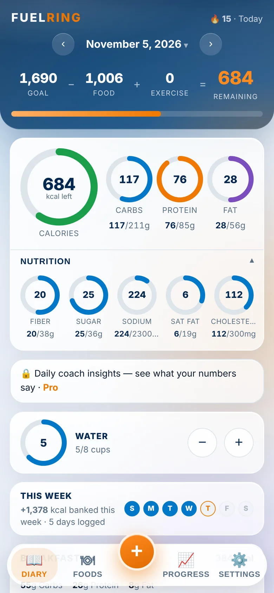
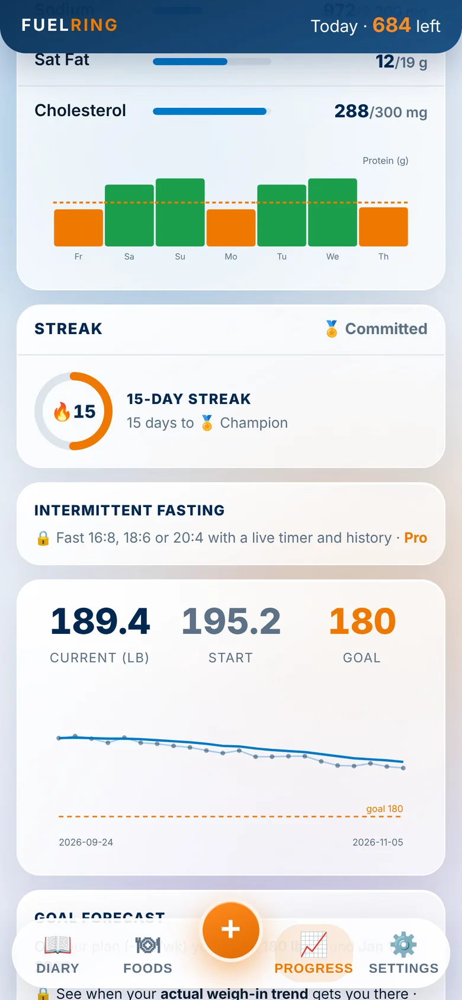

01
Log a meal in seconds
Search nearly 1,400 foods, from chicken breast to Big Macs and chilaquiles, with your recent and most frequent foods one tap away. Quick add from a label, save a meal and log it again in one tap.
Calorie & macro tracker · iPhone and web
FuelRing tracks calories, macros and nutrients in rings that fill as you eat. No account, no ads, no subscription, and your diary never leaves your device.

How it works
Everything a food diary needs, without the sign-up, the ads or the yearly bill.



01
Search nearly 1,400 foods, from chicken breast to Big Macs and chilaquiles, with your recent and most frequent foods one tap away. Quick add from a label, save a meal and log it again in one tap.
02
Point your camera at a product and log it. Unknown items are looked up online (only the barcode number is sent). Even liquor bottles, which carry no nutrition label: FuelRing works out the standard pour.
03
Calories, carbs, protein and fat up top, plus fiber, sugar, sodium, saturated fat and cholesterol against targets for your age and sex.
04
Weigh in and your calorie goal adjusts. A trend line smooths out daily water-weight swings, and a weekly report shows your averages.
Find your number
The same math the app uses. Slide, and watch it change.
calories a day
Mifflin-St Jeor with your activity level, 500 kcal a day per pound a week, and safe minimums (1,200 women, 1,500 men). Macros start at 50/20/30. A starting point, not medical advice.
Try it
Tap a food to add a serving. Real numbers from FuelRing's food list, against a sample 1,800-calorie day.
1,800 kcal left
Free & Pro
Most trackers charge every year, and some charge for the barcode scanner. FuelRing keeps the scanner free and sells Pro once.
On iPhone and in any browser. No ads, no account.
In the iPhone app. Never a subscription.
U.S. price; the App Store shows yours. The web app is the free tier, and Pro stays with your Apple purchase.
FuelRing has nowhere to send your diary, so it stays on your device.
Get it on any phone
Download the iPhone app, or add the web app to your Home Screen. It opens full screen with its own icon and works offline.
The full app: the free camera scanner and Apple Health sync.
Download on theApp StoreIt runs in Chrome, scans barcodes with your camera, and installs like an app.
Open the web appLog at your desk or look over your week on a big screen. Chrome and Edge can install it as an app too.
Open the web appThe web app keeps your diary in that browser, on that device: add it to your Home Screen so it stays put, and back up now and then. Moving to the iPhone app? Back up on the web, then restore the file in the app.
Questions
Yes. Logging, the barcode scanner, nearly 1,400 foods, nutrients, weigh-ins and weekly reports are free, with no ads and no account. Pro is an optional one-time purchase in the iPhone app.
$9.99 once in the U.S. App Store (the App Store shows the price where you are). It's never a subscription, and it unlocks everything listed above for good.
There's no account and no cloud, so nothing syncs by itself. Moving takes a minute: Settings → Back up my data on one, then Settings → Restore from a backup on the other.
Use the web app in Chrome today. It installs to your Home Screen, works offline and scans barcodes with your camera.
Yes. After your first visit the web app opens without a connection. Only looking up an unknown barcode needs the internet, and you can turn that off.
Yes, free: request your export from MyFitnessPal or Cronometer, then import it in Settings → Switching apps. Meals, weigh-ins and exercise come with you.
Free on iPhone and in any browser.